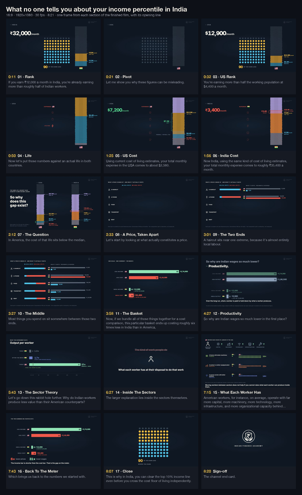
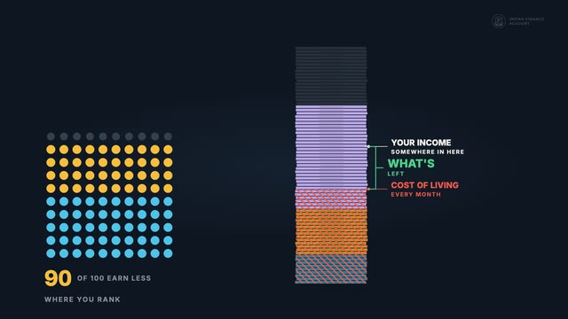
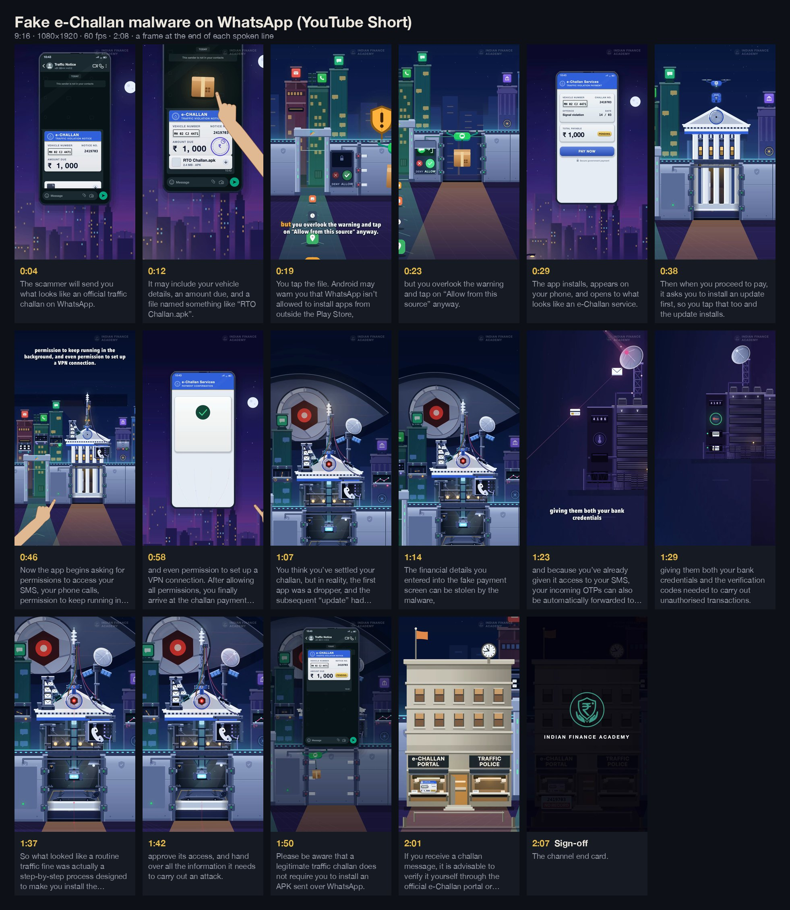
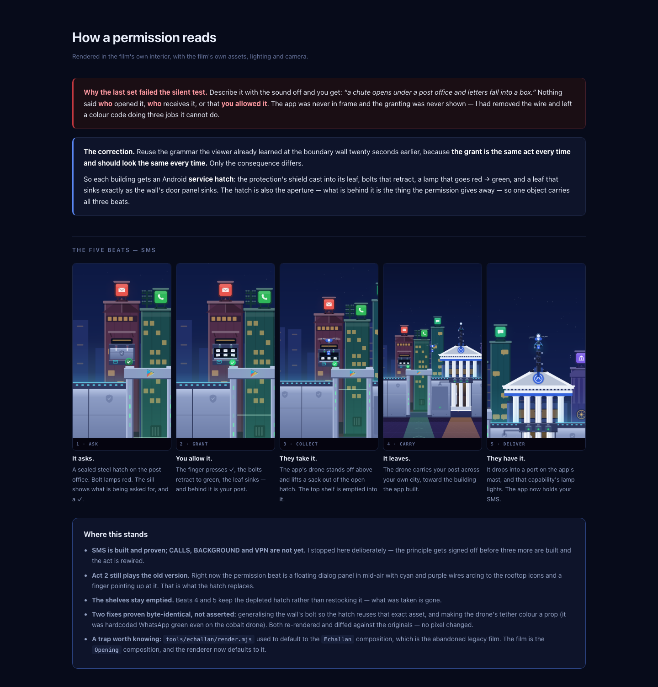
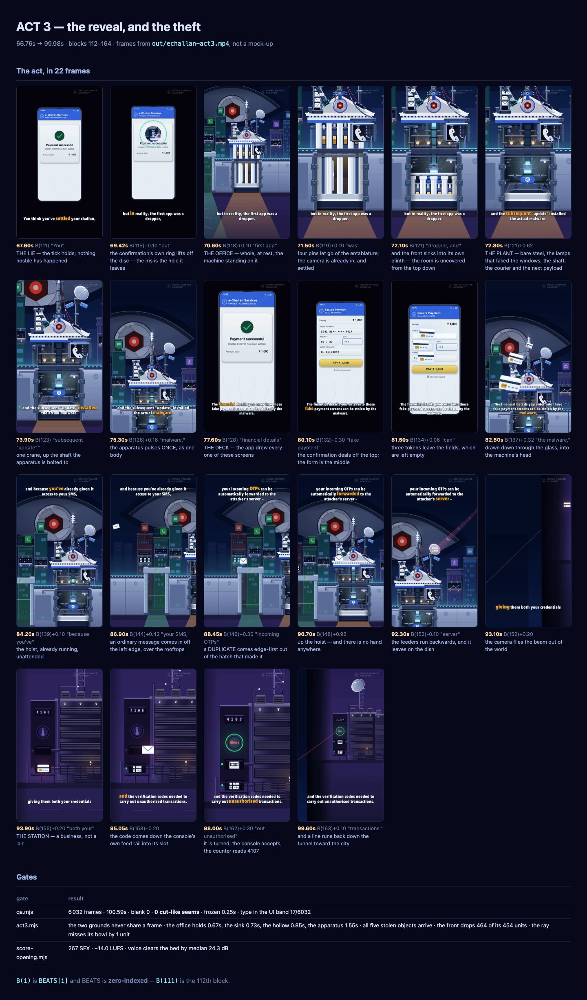
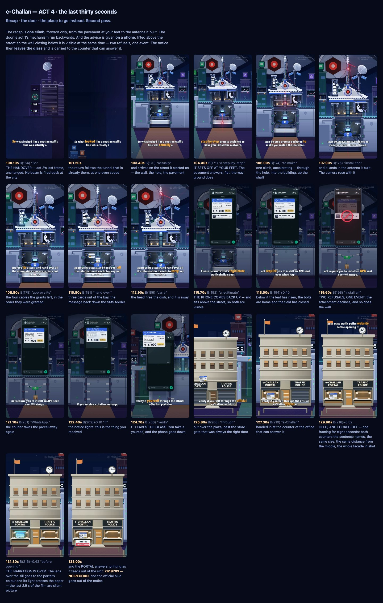

Finance documentaries · animated in code
Films where the picture moves when the argument does.
Three explainers for the Indian Finance Academy YouTube channel. Every frame is animated programmatically — React and TypeScript on Remotion, with FFmpeg for encoding — and the narration is the clock: each visual event is anchored to a measured word, so a new read re-times the whole film.
- 3
- films — one long-form, two Shorts
- 11:19
- of finished animation
- 25,718
- frames, every one rendered from code
- 366
- beats, each anchored to a measured word
Long-form · 16:9 · 1920×1080 · 30 fps · 8:21
It's Not Just You: India Has a Real Structural Economic Problem
Working title: What no one tells you about your income percentile in India
₹32,000 a month puts you in India's top 10% of earners — and still short of what an ordinary independent urban life costs. The film sets each country's income ladder against the cost of the same life, takes a price apart into its local and global inputs, and follows the gap down to what each worker has to work with.
- Rank and amount in one picture. A 100-dot percentile field beside an income "meter" — a stack of notes scaled to each country's ceiling — so "top 10%" and "₹32,000" are read together.
- Cost is hatched over income, never replacing it, so a shortfall is a visible overlap on the same ladder.
- Numbers are consequences. Each counter is an odometer tied to what it measures, and settles on the exact frame the number is spoken — checked by an automated gate.
Behind the film
{kind=link}

StoryboardSeventeen sections A frame from every section of the finished film, with its opening line.
ExplorationsOptions, rendered Three scene handovers and four end cards, compared before choosing — playable below.Read: Film notes Script Source code QA gates & tooling
Explorations — rendered before choosing
YouTube Short · 9:16 · 1080×1920 · 60 fps · 0:50
This UPI Request Can Empty Your Account
UPI collect-request fraud
A UPI "collect request" is dressed up as money coming in, and entering the PIN sends money out. The film keeps two registers on screen at once — the ledger above (what is actually happening) and the phone below (what the victim sees) — and links them physically: the four PIN dots leave the phone and become the rupee tokens that travel the ledger. The authorisation is the money.
- One of everything. One phone, one flow arrow, one request card — carried from the seller to the crowd to the parents. Nothing is destroyed and rebuilt.
- 78 beats, each anchored to a measured word; the reversal also reads in greyscale, through direction and position.
- A measured hand. The pressing hand is built from a written spec after four attempts that drew the right parts and still didn't read as a hand.
Behind the film
{kind=link}
YouTube Short · 9:16 · 1080×1920 · 60 fps · 2:08
This WhatsApp Message Can Empty Your Bank Account
Fake e-Challan malware
The trap is boring: a fake traffic challan, an APK, an "update", four routine permission prompts. The film makes the phone a walled city. Installing from outside the Play Store cuts a door in the wall; the app builds an office inside it; each permission opens a real facility — the post office for SMS, the exchange for calls — and grows a matching machine on the app's building. The reveal opens the office to show the apparatus behind the façade.
- One continuous camera for all four acts, measured as optical flow so no move stops dead or arrives harder than its speed allows.
- Object permanence. What the viewer presses is what arrives; the payload stays lit in the office, so the reveal re-focuses on something already seen.
- Captions get out of the way. Which edge each caption sits on is measured off the picture — 11 of 31 pages move to the top.
Behind the film
{kind=link}

StoryboardLine by line A frame from the final render at the end of each spoken line.
Design boardHow a permission reads Ask, allow, collect, carry, deliver — the grant as one physical act.
Design boardAct 3 — the reveal The reveal and the theft in 22 frames, with its gate results.
Design boardAct 4 — the last 30 s The recap as one climb, the door run backwards, and the place to go instead.How they're built
The narration is the clock.
No visual event in these films is placed at a typed frame number. Everything hangs off the measured narration, and every render is checked by gates that measure it.
- Lock the scriptSplit into beats at the words that motivate a visual event, so the subtitles cannot drift from the voice.
- Measure the readThe recorded narration is force-aligned to the script — every word gets a measured start and end.
- Anchor to wordsScenes, statistics, camera keys, colour and sound are offsets from words. Re-record, and the film re-times itself.
- Board firstPre-mortems and design boards settle the hard moments while changing them is cheap.
- Gate the renderNumbers land on the spoken frame, nothing moves before its line, no dead holds, no hard camera stops.
More: Production rules Automated QA Final masters (download)